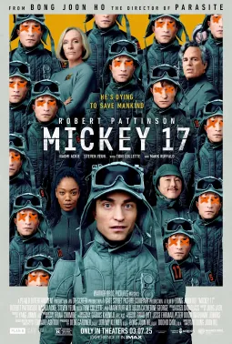

The genetics
Genetics appears through human "reprinting", a form of cloning in which a new body is produced and the person's stored memories are loaded into it. The film treats it less as a scientific question than as a moral and political one: Mickey's bodies are disposable labour, the colony's scientists repeatedly kill him to test a vaccine, and his consent is coerced by debt. The leaders' objections to "multiples", which one colonist calls "soulless abominations" and Marshall "Satan's work", show how questions of identity and personhood raised by cloning are filtered through ideology. Science is presented as an instrument of exploitation rather than an independent force, and the film's sympathies lie with the expendable worker and with the native species the colonists plan to destroy. In reality, a cloned human would be a separate person of a different age, like an identical twin, and memories cannot be transferred into a body.
The story
In 2050, Mickey Barnes, fleeing a loan shark, signs up for a colonising mission to the ice planet Niflheim as an "Expendable": he performs deadly tasks, and each time he dies a new body is reprinted with his memories restored. On Niflheim, the colony's scientists sacrifice many Mickeys while developing a vaccine against local pathogens. Mickey 17 falls into a crevasse while hunting a native creature, a Creeper, and is left for dead, but the Creepers carry him to the surface. Returning to base, he finds that Mickey 18 has already been printed. Because the colony's leader, Kenneth Marshall, has outlawed "multiples", the two Mickeys must hide their coexistence. Exposed and arrested, they are forced into Marshall's plan to exterminate the Creepers. Mickey 17 warns the Creepers, Mickey 18 kills himself and Marshall with a bomb, and the colony makes peace with the native species. The Expendable programme is abolished and the reprinting machine destroyed. The film was directed by Bong Joon-ho.